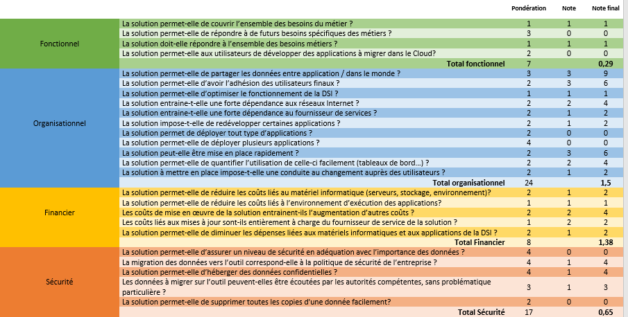
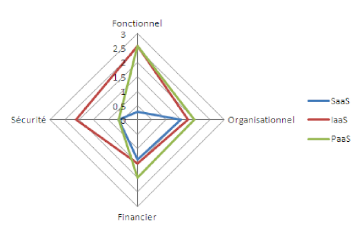

Cloud

Computing
M1 MIAGE, Université Paris 1 - Panthéon Sorbonne
Concept commercial prometteur
l'un des segments à croissance rapide de l'industrie informatique
Digital Workplace

favorise
la productivité
le bien-être au travail
la collaboration
plus d'elasticité
défis pour l'adoption du cloud ?
où commencer
sur quoi se concentrer
but du projet ?

évaluer les enjeux pour faire migrer les applications vers le cloud
définition
l’utilisation de la mémoire et des capacités de calcul des ordinateurs et des serveurs répartis dans le monde entier et liés par un réseau.
modèles
SaaS
Software as a Service
PaaS
Platform as a Service
IaaS
Infrastructure as a Service
tableau comparatif


architectures cloud
cloud public
cloud privé
schéma

les critères
risques

1. confidentialité des données
comment garantir la sécurité des données ?
hypothèse
utiliser cloud privé
modèle PaaS et SaaS
base de données gérée par le fournisseur cloud
modèle IaaS
base de données gérée par l'entreprise
un autre aspect : SLA
2. les dépendances
> dépendance au prestataire cloud
> dépendance au réseau (internet)
3. la perte des données
> modèle PaaS ? SaaS ? IaaS ?
> garantir la sauvegarde des données
coûts

migration vers le cloud
=
faire des économies ?
1. coûts de mise en place
> coûts du migration de données
> coûts de réseau
> coûts d'architecture (en fonction du modèle)
modèle SaaS

modèle PaaS
modèle IaaS
2. coûts récurrents
> coûts du forfaitaires
> coûts des fonctionnalités supplémentaires
> coûts de maintenance
> coûts de personnel
3. coûts de mise à jour
approche terrain

analyser les critères principaux de l’état de l’art par le biais de la méthodologie d’aide à la décision
hypothèse
pour les applications ayant des données confidentielles, on utilise le modèle cloud IaaS
exemple > une application financière en banque
notre approche
interview auprès d’experts au sein de
les résultats > tableau d’aide à la prise de décision
les critères regroupés en
4 principales familles
> fonctionnelle
> organisationnelle
> financier
> sécurité
3 étapes d'analyse de la grille de critère
1. la pondération des critères
> 1 = peu important
> 2 = modérément important
> 3 = important
> 4 = très important
2. analyse des modèles de cloud selon la grille
une note entre 0 et 3
0 = non adéquate
3 = parfaite adéquation
3. agrégation des résultats
opération à réaliser
Σ(pondération * note)
Σ(pondération)
exemple
modèle SaaS chez la direction de comptabilité de
grille de critères (pour SaaS)

les graphes radars
